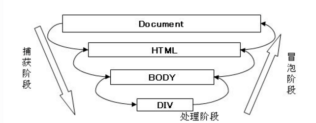

2. Web APIs¶
Web API 是浏览器提供的一套操作浏览器功能和页面元素的 API (BOM, DOM)
2.1. DOM¶
文档对象模型 Document Object Model
W3C 推荐的处理可扩展标记语言的标准编程接口
文档 document: 一个页面
元素 element: 页面中的所有标签
节点 node: 网页中的所有内容
DOM 中的所有内容都是对象
2.1.1. 获取元素¶
// ID
// 返回 element 对象
var ele = document.getElementById(id);
// tag
// 返回 element 对象的伪数组
var eles = document.getElementsByTagName(tag);
// class
// 返回 element 对象的伪数组
var eles = document.getElementsByClassName(class);
// query
// 返回第一个 element
var ele = document.querySelector(query);
// 返回所有 element
var eles = document.querySelectorAll(query);
// 获取 body 和 html
var body = document.body;
var html = document.documentElement;
2.1.2. 操作元素¶
更改元素内容
// 所有内容都被当做字符, 去除空格和换行
ele.innerText = ...;
// html 标签会被解析, 保留空格和换行
ele.innerHTML = ...;
更改元素类
ele.className
- ele.classList 返回元素类的伪数组
ele.classList.add(classname) 添加类
ele.classList.remove(classname) 删除类
ele.classList.toggle(classname) 切换类
更改元素样式 ele.style (行内样式表)
操作元素属性
ele.attrName
只能获得内置属性
ele.getAttribute(‘attrName’)
也可获取自定义属性
ele.setAttribute(‘attrName’, val)
也可设置自定义属性
- 自定义属性
以 “data-” 开始的属性
ele.setAttribute('data-attr1', '1'); console.log(ele.getAttribute('data-attr1')); // 1 // dataset 存放了所有以 data 开始的自定义属性 console.log(div.dataset.attr1); // 1 // dataset 采用驼峰命名法 ele.setAttribute('data-attr-attr1', '1'); console.log(ele.getAttribute('data-attr-attr1')); // 1 console.log(ele.dataset.attrAttr1); // 1 console.log(ele.dataset['attrAttr1']); // 1
2.1.3. 节点操作¶
- 节点基本属性
nodeType
1: 元素节点
2: 属性节点
3: 文本节点
nodeName
nodeValue
- 节点层级
父节点 node.parentNode
- 子节点
node.childNodes 返回包括文本的所有子节点
node.children 返回所有元素子节点
- 兄弟节点
node.nextSibling 包含文本节点
node.previousSibling 包含文本节点
node.nextElementSibling 只包含元素节点
node.previousElementSibling 只包含元素节点
- 创建, 添加节点
document.createElement(tag) // 创建
node.appendChild(child) // 添加到最后
node.insertBefore(child, child_to_insert_before) // 添加到指定元素之前
- 删除节点
node.removeChild(child)
- 复制节点
node.cloneNode() 潜拷贝: 参数为空或 false, 则只复制节点本身
node.cloneNode(true) 深拷贝: 复制节点及其子节点
2.2. 事件¶
2.2.2. 绑定/注册事件¶
on-event
同一个元素同一个事件只能设置一个处理函数, 最后的函数会覆盖先前的函数
addEventListener
可绑定多个监听器, 按顺序执行
eventTarget.addEventListener(type, listener[, useCapture]) // type: 事件类型 // listener: 处理函数 // useCapture: 可选, 布尔值, 默认 false; true 则代表使用事件捕获模式, false 则表示使用事件冒泡模式
2.2.3. 移除事件¶
// e.g. click
ele.onclick = function () {...} // 绑定
ele.onlcick = null; // 移除
// eventTarget.removeEventListener(type, listener[, useCapture]);
function fn() {...} // 定义 listener
ele.addEventListener('click', fn); // 绑定
ele.removeEventListener('click', fn); // 移除
2.2.4. DOM 事件流¶
事件流描述的是从页面中接收事件的顺序
事件发生时会在元素节点之间按照特定的顺序传播, 这个传播过程即 DOM 事件流
3个阶段:
捕获阶段
父元素捕获事件, 依次向下传递至具体元素
当前目标阶段
冒泡阶段
具体元素接收事件, 依次向上传播
2.2.5. 事件对象¶
- 常见属性和方法
e.target 返回 触发 事件的对象 (元素) (this 返回绑定事件的对象)
e.type 返回事件类型 (e.g. click, mouseover)
e.preventDefault() 阻止默认行为 (或 return false;)
e.stopPropagation() 阻止冒泡
2.2.6. 事件委托¶
将事件处理器绑定给父元素, 利用事件冒泡来影响子节点
2.3. 鼠标事件¶
2.3.1. 常用鼠标事件¶
// onclick, 鼠标点击左键
ele.addEventListener('click', function() {...})
// contextmenu, 右键菜单
ele.addEventListener('contextmenu', function(e) {
e.preventDefault(); // 取消默认右键菜单
});
// selectstart, 选中
ele.addEventListener('selectstart', function(e) {
e.preventDefault(); // 禁止选中文字
});
// onmouseover, 鼠标经过
ele.addEventListener('mouseover', function() {...})
// mouseenter, 鼠标进入; 不会冒泡
ele.addEventListener('mouseenter', function() {...})
// onmouseout, 鼠标离开
ele.addEventListener('mouseout', function() {...})
// onmouseleave, 鼠标离开; 不会冒泡
ele.addEventListener('mouseleave', function() {...})
// onfocus, 获得焦点
ele.addEventListener('focus', function() {...})
// onblur, 失去焦点
ele.addEventListener('blur', function() {...})
// onmousemove, 鼠标移动
ele.addEventListener('mousemove', function() {...})
// onmousedown, 鼠标按下
ele.addEventListener('mousedown', function() {...})
// onmouseup, 鼠标弹起
ele.addEventListener('mouseup', function() {...})
2.3.2. 鼠标事件对象 MouseEvent¶
e.clientX 鼠标相对于浏览器窗口可视区的 X 坐标
e.clientY 鼠标相对于浏览器窗口可视区的 Y 坐标
e.pageX 鼠标相对于文档页面的 X 坐标
e.pageY 鼠标相对于文档页面的 Y 坐标
e.screenX 鼠标相对于电脑屏幕的 X 坐标
e.screenY 鼠标相对于电脑屏幕的 Y 坐标
2.4. 键盘事件¶
2.4.1. 常用键盘事件¶
// onkeydown, 键盘按键被按下, 不区分大小写
ele.addEventListener('keydown', function() {...})
// onkeypress, 键盘按键被按下, 区分大小写, 不识别功能键 (e.g. ctrl, shift)
ele.addEventListener('keypress', function() {...})
// onkeydown, 键盘按键被松开
ele.addEventListener('keyup', function() {...})
// 执行顺序: keydown -> keypress -> keyup
2.4.2. 键盘事件对象 KeyboardEvent¶
e.keyCode 被按下的按键的 ASCII 代码
2.5. BOM¶
window 对象是浏览器的顶级对象:
既是 JS 访问浏览器窗口的一个接口
也是一个全局对象; 定义在全局作用域中的变量, 函数都会变成 window 的属性和方法, 在调用时可以省略 window
2.5.1. window 对象常用事件¶
// 窗口加载事件
// 文档内容完全加载完成时触发
window.onload = function() {...};
window.addEventListener('load', function() {...});
// DOM 加载完毕时触发 (不包含 CSS, 图片等)
window.addEventListener('DOMContentLoaded', function() {...});
// 调整窗口大小事件
// 浏览器窗口大小改变时触发
window.onresize = function() {...};
window.addEventListener('resize', function() {...})
2.5.2. location 对象¶
window 对象的 location 属性, 用于获取或设置窗体的 URL, 也可用于解析 URL
- URL
Uniform Resource Locator, 统一资源定位符
protocol://host[:port]/path/[?query]#fragment
协议://主机(域名)[:端口]/路径/[?参数]#片段
- location 对象的属性
location.href 获取或设置整个 URL
location.host 主机
location.port 端口号
location.pathname 路径
location.search 参数
location.hash 片段
- location 对象的方法
location.assign() 跳转页面, 记录浏览历史, 可以后退
location.replace() 替换当前页面, 不记录浏览历史, 无法后退
location.reload() 重新加载页面; 参数传入 true 可以强制刷新
2.5.4. history 对象¶
与浏览器历史纪录进行交互, 包含了浏览器访问过的 URL
back() 后退
forward() 前进
go() 由参数决定前进或后退; 1 前进 1 个页面, -2 后退 2 个页面
2.5.5. 定时器¶
// setTimeout, 在延迟 delay 毫秒后执行
// window 可省略
// delay 时间单位为毫秒默认为 0
var timer = window.setTimeout(callback, delay)
// 清除定时器
window.clearTimeout(timer);
// setInterval, 每隔 delay 毫秒执行一次 (第一次执行也会等待 delay 毫秒)
// window 可省略
// delay 时间单位为毫秒默认为 0
var timer = window.setInterval(callback, delay)
// 清除定时器
window.clearInterval(timer);
2.5.6. JS 执行机制¶
Javascript 是 单线程非阻塞的脚本语言:
单线程即只有一个主线程来处理所有的任务, 所有任务都需要排队执行
非阻塞则是当代码需要进行一项异步任务 (无法立刻返回结果, 需要花一定时间才能返回的任务, 如I/O事件) 的时候, 主线程会挂起 (pending) 这个任务, 然后在异步任务返回结果的时候再根据一定规则去执行相应的回调
但现在的 JS 可以利用 web worker 技术实现异步执行
- 同步
按顺序执行任务, 前一个任务结束后再执行后一个任务
- 异步
创建多线程, 同时执行
同步和异步¶
同步任务
同步任务在主线程上执行, 形成一个 执行栈
异步任务
JS 中异步由回调函数实现, 一般有 3 种类型:
普通事件, e.g. click, resize
资源加载, e.g. load, error
定时器, e.g. setInterval, setTimeout
异步任务相关的回调函数被添加到 任务队列 (消息队列) Task Queue 中
- 执行顺序: 事件循环 (Event Loop)
执行执行执行栈中的同步任务
遇到异步任务就放入任务队列中
执行栈中的所有同步任务执行完后, 依次读取异步任务到执行栈中执行

2.6. PC 网页特效¶
2.6.1. offset¶
偏移量, 动态获取元素位置, 大小等
ele.offsetParent 返回元素的最近的定位父元素
ele.offsetTop 元素相对于定位父元素的上边框的距离
ele.offsetLeft 元素相对于定位父元素的左边框的距离
ele.offsetWidth 元素宽度, 包含 border 和 padding
ele.offsetHeight 元素高度, 包含 border 和 padding
2.6.2. client¶
ele.clientTop 元素上边框大小
ele.clientLeft 元素左边框大小
ele.clientWidth 元素宽度, 包含 padding
ele.clientHeight 元素高度, 包含 padding
2.6.3. scroll¶
ele.scrollTop 滚动过去的上侧距离
ele.scrollLeft 滚动过去的左侧距离
ele.scrollWidth 内容的实际宽度
ele.scrollHeight 内容的实际高度
页面滚动事件 onscroll
2.7. SP 网页特效¶
2.7.1. 触屏事件 touch¶
touchstart 手指触摸到 DOM 元素
touchmove 手指在 DOM 元素上滑动
touchend 手指从 DOM 元素上移开
2.7.2. 触摸事件对象 TouchEvent¶
e.touchs 正在触摸屏幕的所有手指的列表
e.targetTouches 正在触摸当前 DOM 元素的所有手指的列表
e.changedTouches 手指状态发生改变的列表
2.8. 本地存储 Local Storage¶
数据存储在浏览器中
设置, 存储方便, 页面刷新也不会丢失数据
2.8.1. window.sessionStorage¶
数据保存至浏览器窗口关闭
同一个窗口下数据可以共享
以 key-value 形式存储
// 设置
sessionStorage.setItem(key, value)
// 获取
sessionStorage.getItem(key)
// 删除
sessionStorage.removeItem(key)
// 清除所有
sessionStorage.clear()
2.8.2. window.localStorage¶
数据永久保存, 除非手动删除
多窗口数据共享
以 key-value 形式存储
// 设置
localStorage.setItem(key, value)
// 获取
localStorage.getItem(key)
// 删除
localStorage.removeItem(key)
// 清除所有
localStorage.clear()